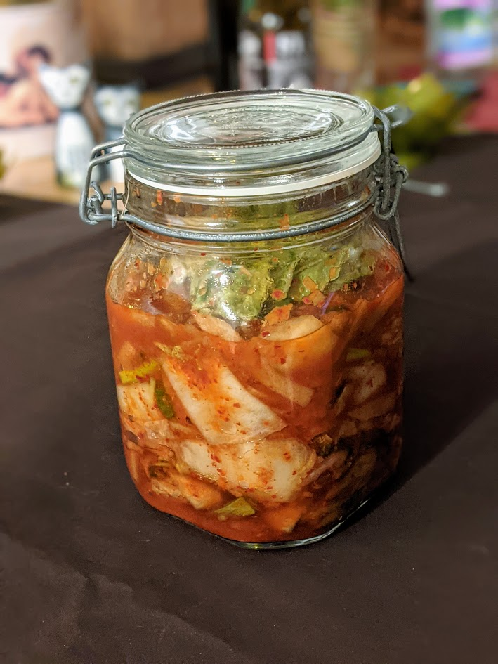

Kimchi

Pour un pot assez gros de kimchi :
- Un kilo de chou chinois (un gros)
- 70g de sel
- 150g de radis blanc ("daïkon")
- Trois grosses gousses d'ail
- Trois oignons frais
- Une échalote
- Une petite phalange de gingembre frais
- Entre 10 et 20 grammes de gochugaru (flocons de piments coréens)
- Deux cuillères à soupe de nước mắm (sauce de poisson vietnamienne) ou de sauce soja
- Deux cuillères à café de sucre
- Laver et couper le chou chinoix en tronçons de 2-3 centimètres, en réservant deux grosses feuilles extérieures pour plus tard (les mettre au frigo). Le mélanger avec le sel, le mettre dans un saladier, ajouter de l'eau froide, et recouvrir d'un bol ou d'un autre poids pour que tout le chou soit recouvert d'eau. Mieux vaut ajouter l'eau froide progressivement, le but est d'ajouter le moins d'eau possible mais que tout soit bien recouvert. Laisser mariner à température ambiante pendant 8 heures environ.
- Pendant ce temps, préparer les autres légumes : éplucher et couper le radis blanc en bâtonnets de la taille d'une alumette, laver et couper les oignons frais en tronçons de 5 centimètres environ, éplucher l'ail, l'échalote et le gingembre et les couper en morceaux grossiers.
- Filtrer le chou pour le séparer la saumure, en gardant de la saumure pour plus tard. Rincer le chou vite fait, et enlever un maximum d'eau en pressant le chou ou en le mettant quelques minutes dans du papier absorbant. Le mettre au fond d'un saladier avec le radis et les oignons frais.
- Mettre tous les autres ingrédients (gingembre, ail, échalote, sauce soja ou de poisson, sucre, piment) dans un petit mixeur, et mixer jusqu'à ce que ça forme une pâte épaisse à peu près uniforme.
- Mélanger la pâte avec le chou doucement, par exemple avec les mains, jusqu'à ce que ça soit bien réparti partout. Puis, mettre le tout dans un gros bocal en appuyant bien, en gardant quelques centimètres de marge en haut, et ajouter de la saumure pour que ça soit presque recouvert. Recouvrir avec de la feuille de chou gardée au frigo pour essayer de faire en sorte que tout soit dans la saumure, à part la feuille de chou en haut. On peut aussi utiliser un poids que l'on met au-dessus du mélange.
- Refermer de façon non hermétique, et laisser fermenter trois jours à la cave, ou en tous cas dans un endroit sombre et froid (15°C idéalement, entre 12°C et 18°C c'est OK).
- Au bout de trois jours, vérifier si le kimchi commence à faire des petites bubulles si l'on tapote sur le bocal. Si ce n'est pas le cas, attendre un ou deux jours de plus, voire même un peu plus si le lieu de fermentation est froid.
- Une fois qu'on voit les bulles, fermer le bocal hermétiquement, et le mettre au frigo. Le kimchi est prêt à être consommé immédiatement, mais il est meilleur si on attend une ou deux semaines. Ça se garde plusieurs mois.
Remarque : la feuille de chou peut parfois moisir lors de la fermentation. Si ça arrive, ne pas paniquer : la virer, et éponger le bord du bocal, et la remplacer. Ça peut arriver aussi à tous les légumes qui ne sont pas complètement immergés ; c'est aussi possible de simplement les enlever si ça arrive, mais c'est mieux d'essayer de faire en sorte que tout soit recouvert.
Retour à la liste des recettes